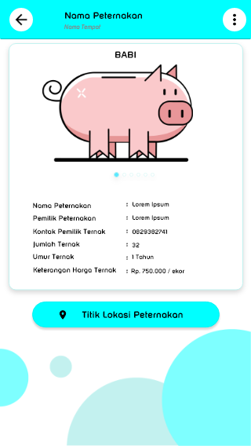

Project II
Aplikasi Pemetaan Peternak Berbasis S.I.G.
Aplikasi Pemetaan Peternak Berbasis S.I.G.
Aplikasi Pemetaan Peternak Berbasis S.I.G. adalah project freelance yang saya kembangkan untuk memenuhi Tugas Akhir salah satu mahasiswa di salah satu perguruan tinggi Kota Kupang.
Dalam project ini saya mengembangkan sebuah aplikasi berbasis mobile Android dengan menggunakan Tools Android Studio versi 3.2
Gambar

